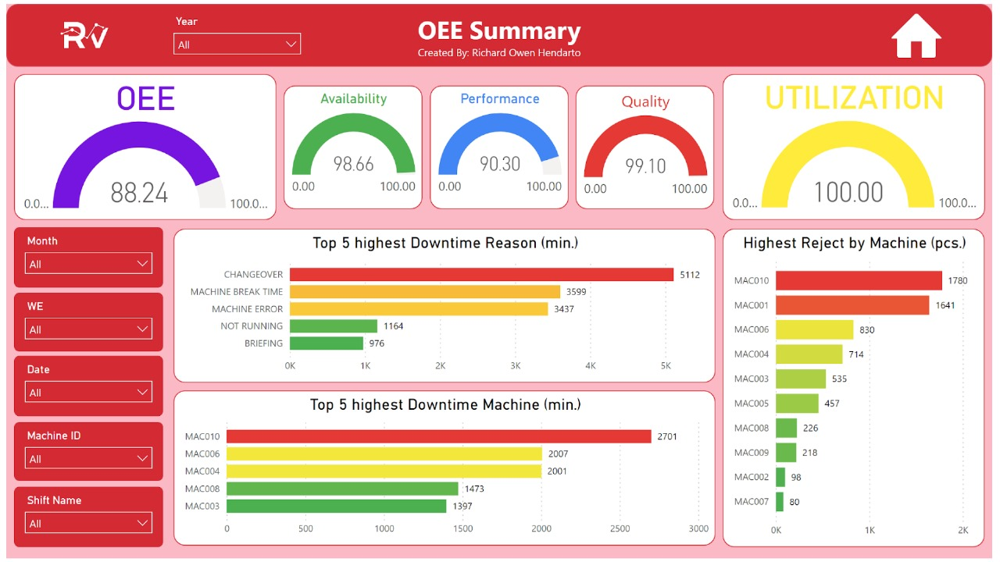
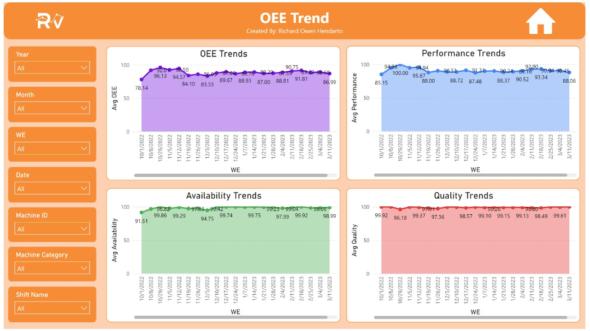
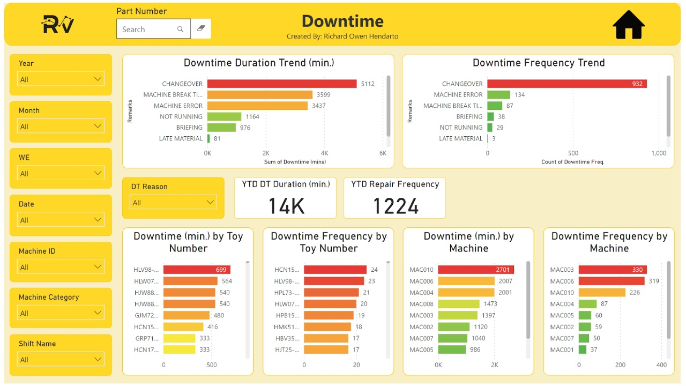
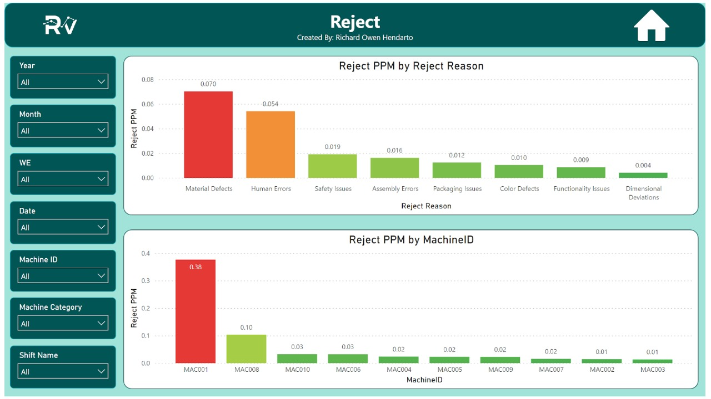
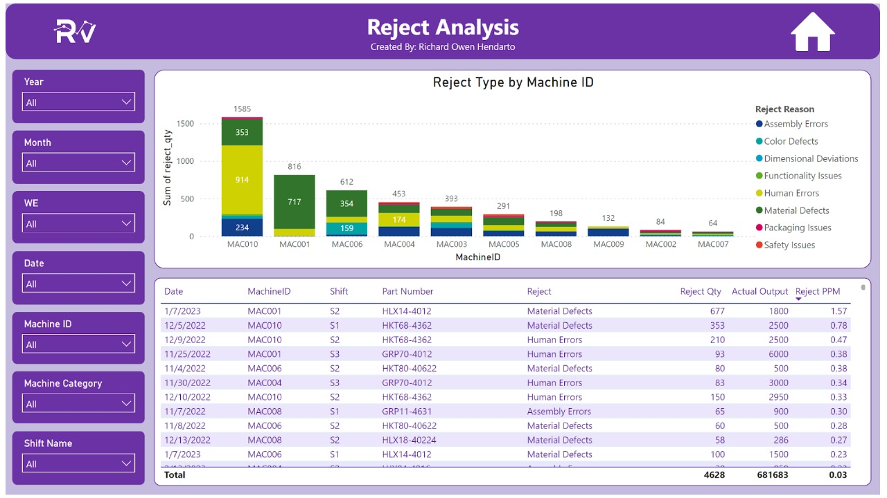
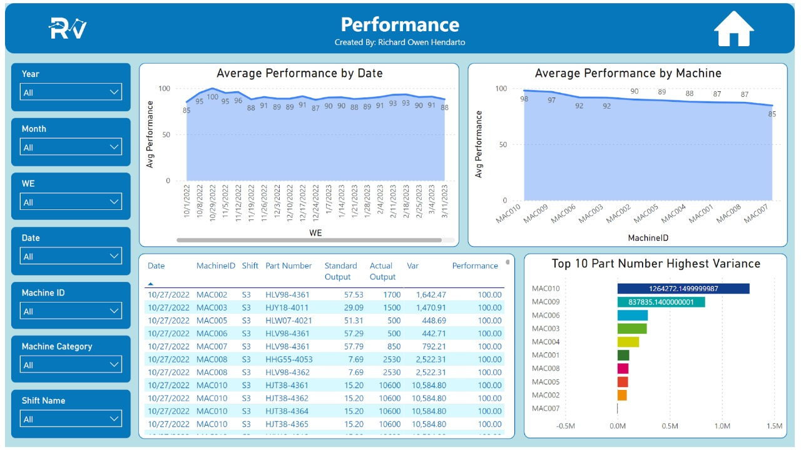

Analytics case study / Manufacturing monitoring
Machine Monitoring
A Power BI dashboard for recurring review of machine performance, OEE, and downtime.
Context
Internship project at PT Mattel Indonesia focused on manufacturing machine-performance monitoring.
Business Problem
Machine-generated data needed a more structured monitoring view so key performance indicators could be reviewed more easily.
Objective
Consolidate machine-performance information into a Power BI dashboard for recurring monitoring and analysis.
My Contribution
Gathered, transformed, and visualized machine-generated data; developed and maintained the reporting dashboard; and supported related user requests.
Analysis Coverage
OEE and downtime monitoring, alongside reject and performance views.
Selected Dashboard Views






Decision Support
Helped users monitor machine performance and identify areas requiring further investigation.
Business Impact
Provided a centralized monitoring view for machine-performance data.
Tools
Power BI.